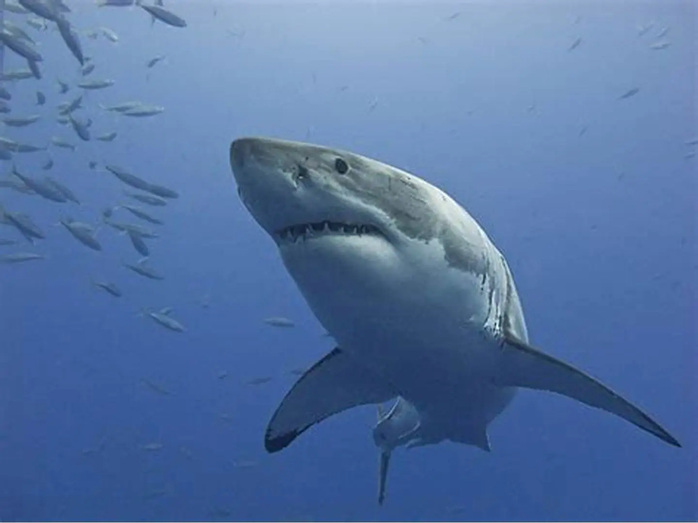

Haie
Haie (Selachii, Synonyme: Selachimorpha, Selachoidei und Pleurotremata) sind Fische aus der Klasse der Knorpelfische. Es sind weltweit über 500 Arten bekannt. Das Wort Hai stammt vom niederländischen haai ab. Dieses wiederum kommt vom isländischen Wort haki, das „Haken“ bedeutet und eine Anlehnung an die hakenförmige Schwanzflosse der Haie ist. Umgangssprachlich werden die Haie oft Haifische genannt.
Die meisten Haie fressen Fische und andere größere Meerestiere; die zwei größten Haiarten, der bis zu 14 m lange und 12 t schwere Walhai und der Riesenhai, sowie der Riesenmaulhai ernähren sich im Wesentlichen von Plankton. Obwohl jährlich nur etwa fünf Menschen infolge von Haiangriffen sterben, gelten die Tiere gemeinhin als kaltblütige Killer und Menschenfresser. Viele Haiarten sind durch übermäßige Befischung in ihrem Bestand bedroht.

Bild herunterladen